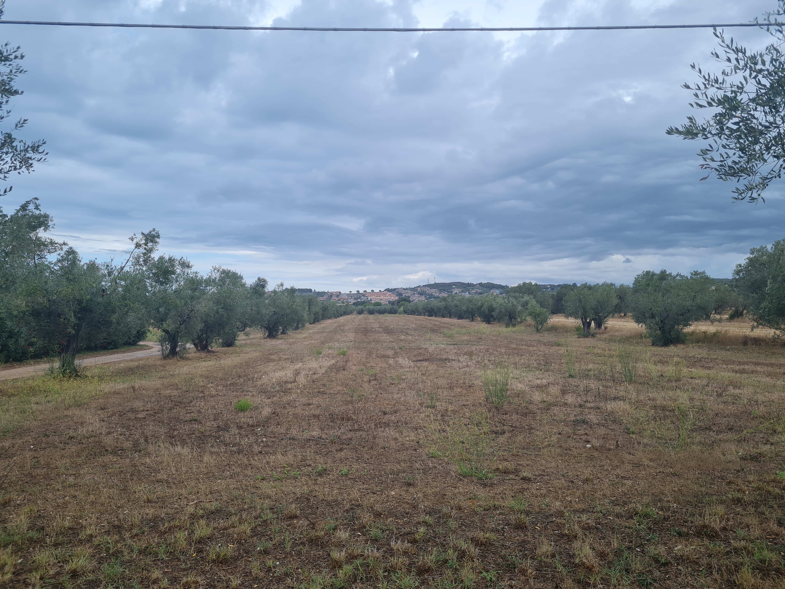
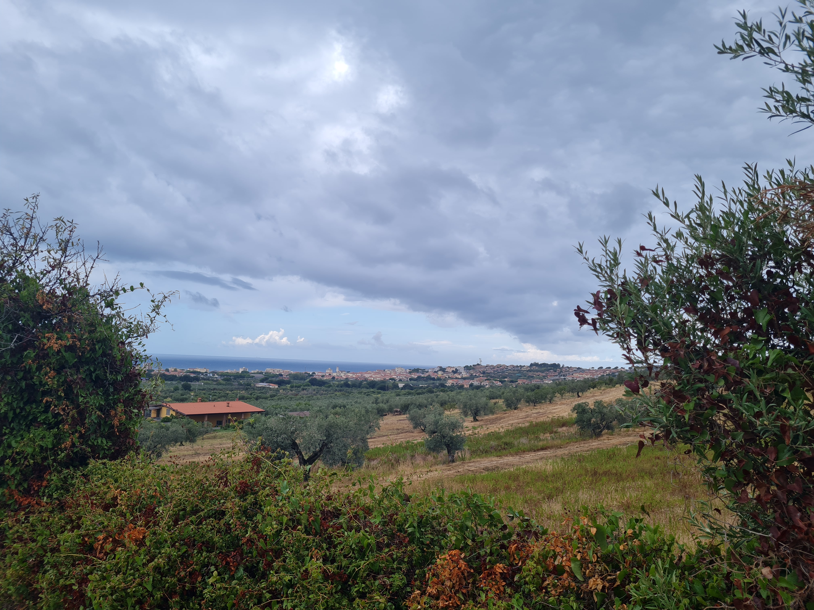
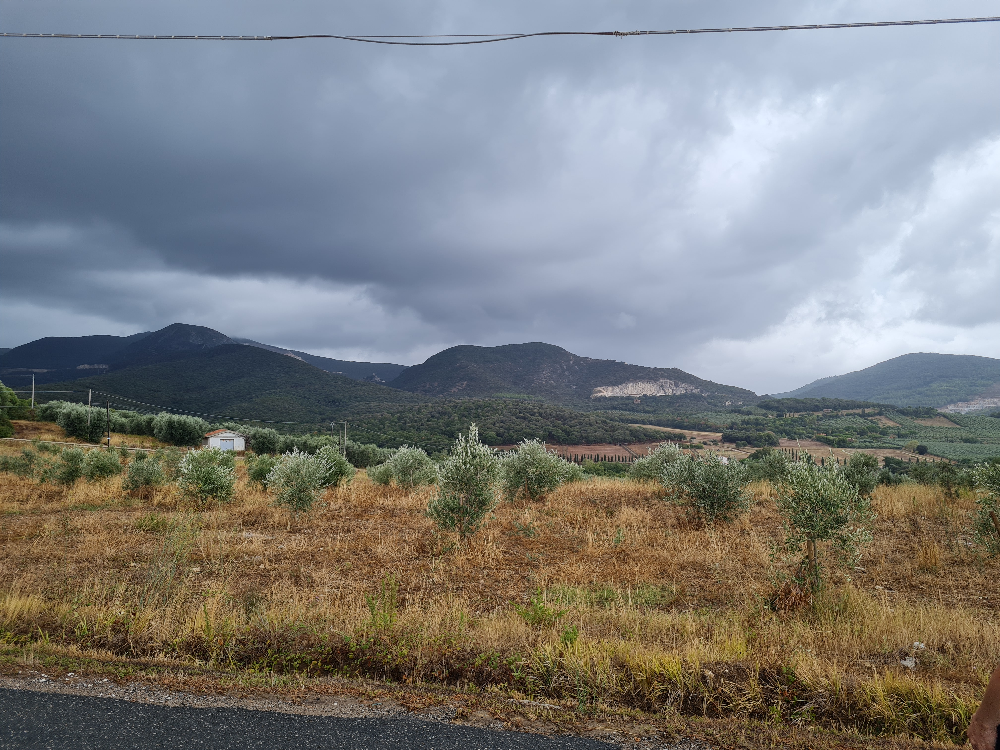
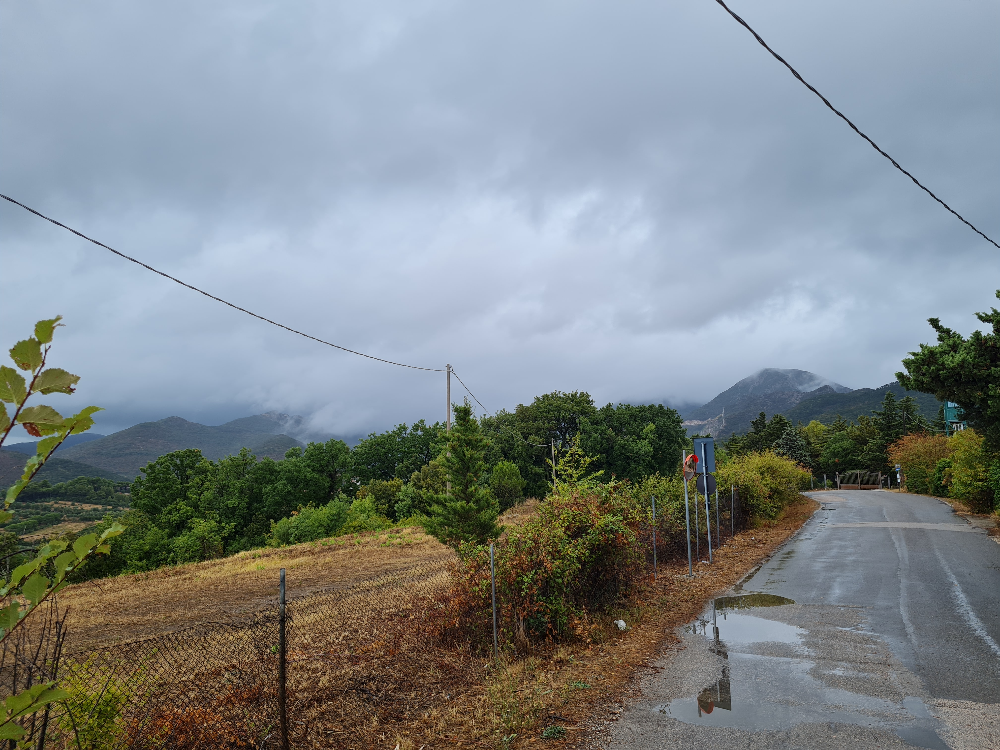
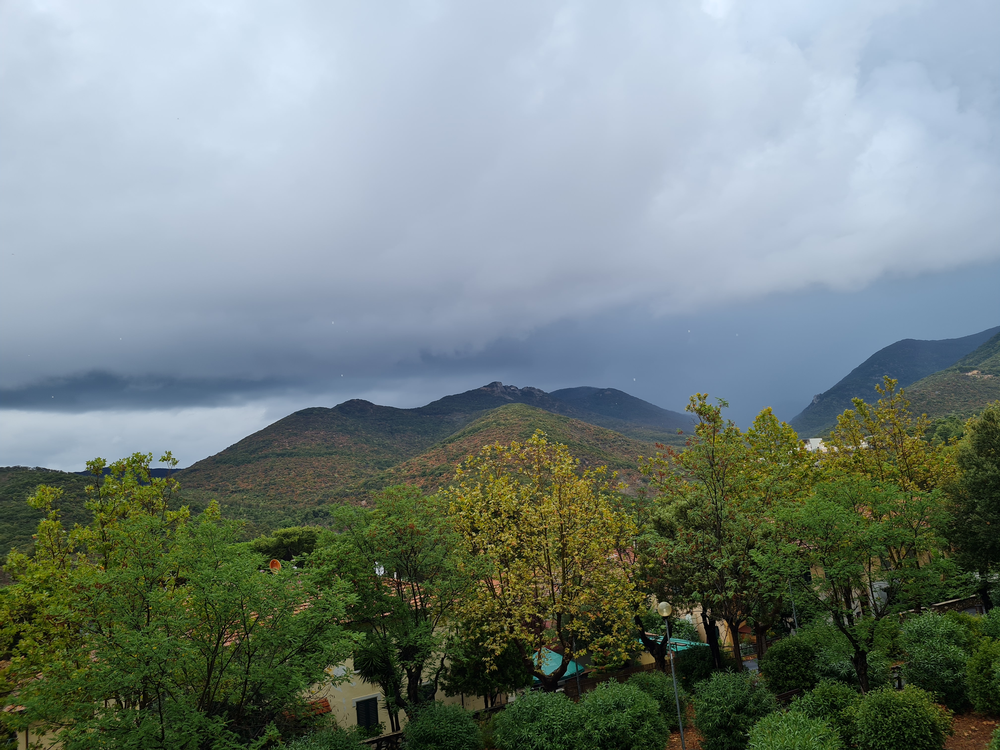
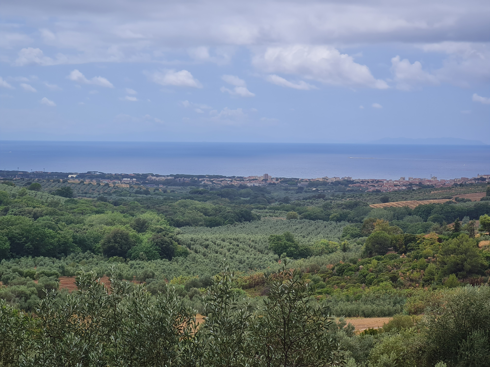

Погода того дня обіцяла бути хмарною, проте без доща, що якщо забігаючи наперед виявилося
неправдою
😅
Коли нас застала перша злива, повторюся: "Перша" 😂, ми сховались під
якесь дерево. Там простояли
хвилин може 10-15, після чого якийсь добрий чоловік зупинився, та запропонував підвезти. Ми із вдячністю
погодились. Він відвіз нас до найближчого супермаркету, де ми і перечекали нашу першу зливу.
Після того як злива закінчилась, я вже був подумав що мої не рішаться йти далі, проте на моє здивування ми
продовжили нашу маленьку подорож.
PS: У даній роботі я також буду використовувати атрибути "width" та "height",
так як мені око ріже, коли
я бачу такі здоровезні фото на екрані 🙃
-
Гора, в сторону котрої ми йшли

-
Оливкові дерева, плантація
-
Одні з перших кадрів, де вже видно море з висоти
-
Просто гори
Після вище вказаних фото, почалась друга злива 🙃. А потім третя, і
нарешті під час ЧЕТВЕРТОЇ ми все
таки дойшли до San Carlo, і вже було всерівно на той дощ, і так були вже мокрі до нитки 😁.
Ще кілька фото із San Carlo:

- 
- 


- 
Ну і під кінець останнє відео, де була шоста ЮВІЛЕЙНА злива 😂:
У сумі ми пройшли 20 км під дощем :)
Дякую за увагу!!!